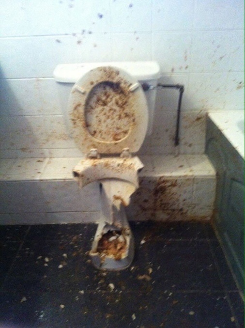

Унита́з — санитарно-техническое приспособление для удаления продуктов дефекации и мочеиспускания, устанавливаемое в туалетах и снабжённое системой автоматического или полуавтоматического смыва. Обычно изготавливается из сантехнической керамики. Конструкция, подобная современному унитазу, впервые изобретена в Китае примерно в I в. до н. э. В Европе подобное устройство впервые появилось в Англии в викторианскую эпоху.
